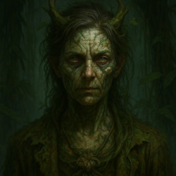

Syn Dravus
The MindweaverHe commands the Overcode that binds Neoh's Memory Vaults — rewriting loyalty and erasing rebellion, one memory at a time.
Read his profile →Maerion Thal
The Sky DukeHe commands both sea and sky from a citadel of marble domes and brass vaults, and no storm has ever once touched his flagship.
Read his profile →Malric Thorne
The Black RegentThirty-five years ago he ended a democracy with a coup nobody's avenged. He rules now by what he calls the arithmetic of suffering.
Read his profile →
Korrus Vale
The Reactor KingHis body is laced with unstable isotopes, and his kingdom is poisoned by the very ore that keeps it alive.
Read his profile →
Lysara Venthe
The TidekeeperA maternal sovereign who calls her citizens "my tides" — and forbids fishing in her waters for reasons she won't fully explain.
Read her profile →
Zura Kaleth
The RootbinderHer sanctuary gardens are famous for their beauty. Guests who get too close to the flowers rarely leave the way they arrived.
Read her profile →Six more Overlords await beyond the Nexus Veil — their profiles unlock as new books release.
Which Overlord Are You?
Answer twenty questions and find out which of the Pantheon's rulers you'd become.
Take the Quiz
Get word when a new world opens
No spam, no Overcode surveillance — just updates on new books, lore drops, and the soundtrack as it's released.